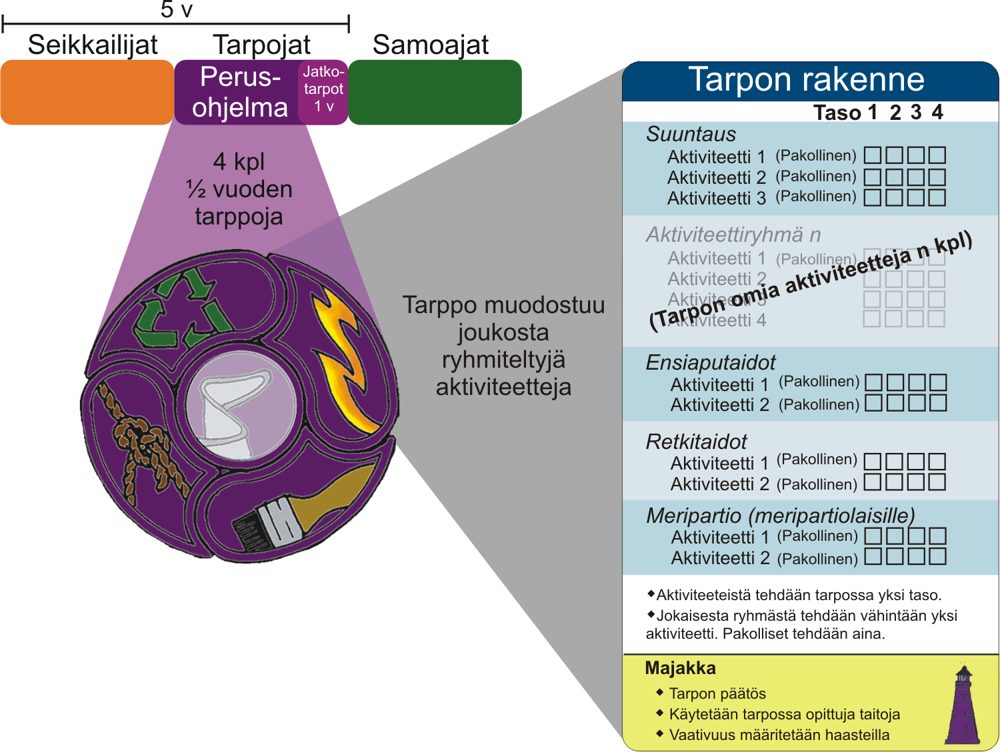

Tarpojien ohjelma

Tarpot:
Muut ohjelman osat:
Lisämateriaalia:
Tarpojaohjelma koostuu neljästä puolen vuoden jaksosta eli tarposta: leiri, luovuus, selviytyminen ja yhteiskunta. Tarpot voidaan tehdä missä järjestyksessä tahansa. Jatkotarppojen avulla tarpojaohjelma voi jatkua kolmannenkin vuoden. Jatkotarpossa syvennetään jo tehdyn tarpon taitoja.
Tarppo
Jokainen tarppo:
- Alkaa suuntaus-vaiheella, jossa suunnitellaan tulevaa ja kohotetaan vartiohenkeä
- Sisältää pakollisia ja valinnaisia aktiviteetteja
- Huipentuu majakkaan, jossa tarpojavartio pääsee kokeilemaan aktiviteeteissa opittuja taitoja oikeissa tilanteissa.
Tarpoja saa merkin jokaisesta tekemästään tarposta. Merkki kiinnitetään ikäkauden aloitusmerkin ympärille. Jatkotarposta tarpoja saa ommella merkin reunaan nyörin. Tarpojien päätösmerkki on metallinen Kimin hymy.
Aktiviteetit
Tarpon aktiviteetit on jaettu aihepiirien mukaan ryhmiin. Osa aktiviteettiryhmistä kuuluu jokaiseen tarppoon (suuntaus, retki- ja ensiaputaidot sekä meripartiolaisten meriaktiviteetit). Ryhmät auttavat vartiota valitsemaan monipuolisesti valinnaisia aktiviteetteja: jokaisesta ryhmästä tulee tehdä vähintään yksi aktiviteetti. Kaikki pakolliset aktiviteetit tulee kuitenkin tehdä.
Jokainen aktiviteetti voidaan tehdä 1 - 4 tasolla, joista vartio valitsee luotsin opastuksella itselleen sopivimman. Pääsääntönä on, että ensimmäisessä tarpossa valitaan ensimmäisen tason aktiviteetteja, toisessa tarpossa toisen tason aktiviteetteja jne. Aktiviteeteista, jotka kuuluvat jokaiseen tarppoon, tarpoja tekee tarpojaohjelman aikana siis kaikki tasot (suuntaus, retki- ja ensiaputaidot sekä meripartiolaisten meriaktiviteetit). Jakson aktiviteetit voidaan tehdä vartion valitsemassa järjestyksessä.
KITT ja Paussi
Tarpojaohjelmaan olennaisesti kuuluvat myös:
- Koko ikäkauden tarpojatapaamiset eli KITTit, joissa tarpoja tapaa muita tarpojia kuukauden tai kahden välein
- Paussit eli toiminnalliset harjoitukset, joissa tarpoja pysäytetään elämään liittyvien asioiden äärelle ja hän saa eväitä kohti aikuisuutta.
